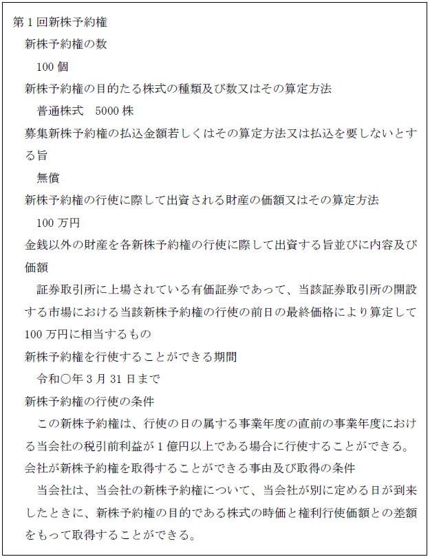
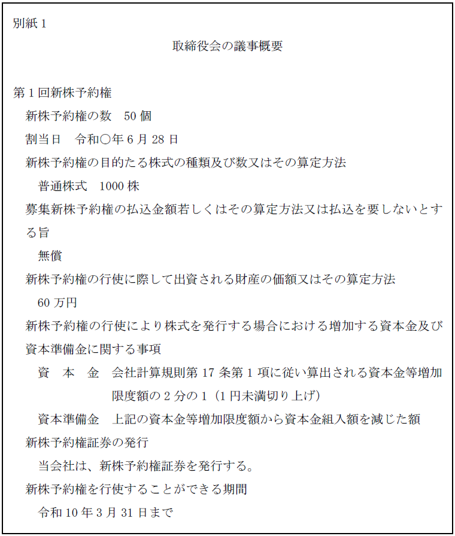
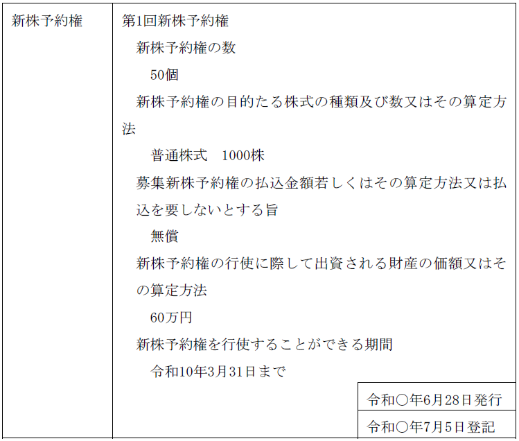

第２編 株式会社
第４章 新株予約権
第１節 総説
新株予約権：株式会社に対して行使することにより、当該株式会社の株式の交付を受けることができる権利（会社法2条21号）
ex. 株式会社が払込金額3万円、行使価額2万円で新株予約権を発行したとする。この場合、3万円を支払って新株予約権を取得した者（新株予約権者）は、行使期間中に2万円を支払えば新株（又は株式会社の保有する自己株式）を取得できる。また、2万円を調達できなかった場合には、新株予約権を譲渡することもできる。
新株予約権が行使されると、株式会社は新株予約権者に対して株式を発行することもできるし、株式会社の有する自己株式を交付することもできる。
多様な資金調達を可能にする。また、新株予約権を独立の経済的価値のあるものとして利用することができる。
第２節 募集新株予約権の発行
1. 新株予約権の内容
(1) 新株予約権の内容・募集事項と登記
株式会社は、新株予約権を発行しようとするときは、次に掲げる事項を定めなければならない（会社法236条1項、238条1項）。
| 新株予約権の内容（会社法236条） | 登記の要否 |
| ①新株予約権の目的である株式の数（種類株式発行会社の場合は、株式の種類及び種類ごとの数）又はその数の算定方法 | ○ （会社法911条3項12号ロ） |
| ②新株予約権の行使に際して出資される財産の価額又はその算定方法 | ○ （取締役等の報酬として発行する場合は除く。） （会社法911条3項12号ロ） |
| ③金銭以外の財産を新株予約権の行使に際してする出資の目的とするときは、その旨並びに現物出資財産の内容及び価額 | ○ （会社法911条3項12号ロ） |
| ④新株予約権を行使できる期間（その他新株予約権行使の条件） | ○ （会社法911条3項12号ロ、ニ） |
| ⑤新株予約権の行使により株式を発行する場合において、増加する資本金及び資本準備金に関する事項 | × |
| ⑥譲渡制限新株予約権とするときは、その旨 | × |
| ⑦取得条項付新株予約権（※1）とするときは、その旨、取得事由、一部取得の方法並びに取得対価の内容及び数又は算定方法 | ○ （会社法911条3項12号ホ） |
| ⑧合併等の組織再編に際して存続会社等が新株予約権を交付するときは、その旨及びその条件 | × |
| ⑨新株予約権の行使により交付する株式の端数を切り捨てるものとするときは、その旨 | × |
| ⑩新株予約権証券を発行することとするときは、その旨 | × |
| ⑪記名式･無記名式証券の転換の全部又は一部を禁ずるときは、その旨 | × |
※1 一定の事由が生じた日に当該株式会社がその新株予約権を取得する旨の定めのある新株予約権をいう（会社法236条1項7号イ）。
| その他の募集事項（会社法238条） | 登記の要否 |
| ①募集新株予約権の数 （※2） | ○ （会社法911条3項12号イ） |
| ②新株予約権発行に際して金銭の払込みを要しないときは、その旨 | ○ （会社法911条3項12号ホ） |
| ③上記②以外の場合には、発行時の払込金額又はその算定方法 | ○（※3） （会社法911条3項12号ヘ） |
| ④募集新株予約権の割当日 | × |
| ⑤新株予約権発行時の払込期日を定めるときは、その期日 | × |
| ⑥新株予約権付社債の募集にあっては、社債の募集事項 | × |
| ⑦新株予約権付社債の新株予約権買取請求の方法につき別段の定めをするときは、その定め | × |
※2 登記事項としては、募集時の新株予約権の数ではなく、割当日に現実に発行された数（及びその数に応じた、目的である株式の総数）を記載することに注意する。
※3 原則として募集新株予約権の払込金額を登記し、登記申請時までに払込金額が確定しないときは、当該算定方法を登記する。
(2) 株主に新株予約権の割当てを受ける権利を与える場合（株主割当て）
株主に新株予約権の割当てを受ける権利を与える場合には、上記(1)の「その他の募集事項（会社法238条）」の①から⑦までの募集事項のほか、以下の事項を定めなければならない（会社法241条1項）。
| ・株主に新株予約権の割当てを受ける権利を与える旨 |
| ・当該新株予約権の引受けの申込みの期日 |
なお、株主割当てにおいては、株主に割り当てる新株予約権の目的となる株式は、種類株式発行会社にあっては、割当てを受ける株主の有する種類の株式と同一の種類のものでなければならない（会社法241条1項1号括弧書）。また、自己株式について割当てはなされない（会社法241条2項括弧書）。
株主に募集新株予約権の割当てを受ける権利を与える場合において、割当てを受ける募集新株予約権の数に一に満たない端数が生ずるときは、当該端数は切り捨てられ、株主は、当該端数について募集新株予約権の割当てを受ける権利を有しない（会社法241条2項ただし書）。
ex. 10株あたり1個の新株予約権を付与するとする株主割当ての新株予約権の発行を行う場合に、9株しか持たない株主に割り当てられる新株予約権の数は0.9個となる。このような場合には、当該株主は、新株予約権の割当てを受けることができないことになる。
(3) 取締役の報酬等である新株予約権の発行
上場会社が取締役または執行役の報酬等として又は取締役等の報酬等をもってする払込みと引換えに当該会社の新株予約権の発行をするときは、当該新株予約権の行使に際して金銭の払込み又は現物出資財産の給付を要しない（会社法236条3項、4項）。この場合、定款の定め又は株主総会の決議（指名委員会等設置会社にあっては報酬委員会の決定）により、次の事項を定めなければならない。
ⅰ 取締役等の報酬等として行使に際して金銭の払込み等を要しない新株予約権を発行する場合（会社法361条1項4号、409条3項4号、規98条の3、111条の2）
ア 募集新株予約権の数の上限（報酬委員会の決定による場合にあっては、募集新株予約権の数）
イ 新株予約権の目的である株式の数（種類株式発行会社にあっては、株式の種類及び種類ごとの数）又はその数の算定方法
ウ 金銭以外の財産を新株予約権の行使に際してする出資の目的とするときは、その旨並びに当該財産の内容及び価額
エ 新株予約権を行使することができる期間
オ 取締役等の報酬等として又は取締役等の報酬等をもってする払込みと引換えに新株予約権を発行するものであり、新株予約権の行使に際してする金銭の払込み又は現物出資財産の給付を要しない旨
カ 定款又は株主総会の決議（指名委員会等設置会社にあっては報酬委員会の決定）の定めに係る取締役等（取締役等であった者を含む。）以外の者は、当該新株予約権を行使することができない旨
キ 一定の資格を有する者が募集新株予約権を行使することができることとするときは、その旨及び当該一定の資格の内容の概要（報酬委員会の決定による場合にあっては、その内容）
ク 募集新株予約権の行使の条件を定めるときは、その条件の概要（報酬委員会の決定による場合にあっては、その条件）
ケ 譲渡による新株予約権の取得について会社の承認を要することとするときは、その旨
コ 会社が一定の事由が生じたことを条件として新株予約権を取得することができることとするときは、法236条1項7号に掲げる事項の内容の概要（報酬委員会の決定による場合にあっては、その内容）
サ 取締役等に対して募集新株予約権を割り当てる条件を定めるときは、その条件の概要（報酬委員会の決定による場合にあっては、その条件）
ⅱ 取締役等の報酬等をもってする払込みと引換えに新株予約権を発行する場合（会社法361条1項5号ロ、409条3項5号ロ、規98条の4第2項、111条の3第2項）
・上記ⅰアからコまでの事項
・取締役等に対して募集新株予約権と引換えにする払込みに充てるための金銭を交付する条件又は取締役等に対して募集新株予約権を割り当てる条件を定めるときは、その条件の概要（報酬委員会の決定による場合にあっては、その条件）
【新株予約権の登記の記載例】

2. 新株予約権の募集事項の決定
(1) 通常の発行の場合
新株予約権の募集事項の決定は、募集株式の発行の時の決議機関と同様である（会社法238条2項、239条1項、240条1項、241条3項）。
【原則決議】
| 公開会社 | 非公開会社 | ||
| 第三者割当て | 通常発行 | 取締役会の決議 | 株主総会の特別決議※1 |
| 有利発行 | 株主総会の特別決議 | ||
| 株主割当て | 取締役会の決議 | 原則：株主総会特別決議 例外：定款の定めで取締役（会）による決定可 |
|
※1 委任に基づいて募集事項の決定ができる募集新株予約権の内容及び数の上限・当該新株予約権につき金銭の払込みを要しないこととするときはその旨を定め、取締役（取締役会）に委任することができる（会社法239条1項）。当該委任の決議は、割当日が当該決議の日から1年以内の日である募集についてのみその効力を有する（会社法239条3項）。
(2) 取締役等の報酬等として発行する場合
募集事項の決定は、取締役会の決議による（会240条1項、238条2項）。取締役等の報酬等として発行する新株予約権は、当該新株予約権の行使に際して出資される財産の価額又はその算定方法を定めることを要しない（会社法236条1項2号、236条3項）。
募集事項は通常の募集新株予約権（会238条1項）と同様であるが、内容については、前記1.⑶が反映される。
3. 新株予約権と株式の募集手続の差異
新株予約権と株式の募集手続には、共通する点が多い。そこで、異なっている点のうち主要な点を以下に挙げる。
ⅰ 株式の場合は、自己株式の処分も発行と同一の募集手続において行われるが、新株予約権の場合には、自己新株予約権の処分について規定はなく、発行についての規定（会社法238条）があるのみである。よって、新株予約権の「発行」をする場合、自己新株予約権を処分することはできない。
ⅱ 株式の場合は、その性質上、払込価額がないということはありえないが、新株予約権については、払込価額のない（無償の）発行も認められている。債権の取得にすぎないからである。ただし、新株予約権の行使の場面では、行使価格が必ず存在する。出資であるからである。
ⅲ 株式の場合には、払込期日又は期間を定めなければならないが（会社法199条1項4号）、新株予約権の場合には、これを有償で発行するときでも、必ずしも払込期日又は払込期間を定める必要はなく、定められなかったときは、行使期間の初日の前日までに払い込めばよい。
1. 募集新株予約権の割当て
株式会社は、募集に応じて募集新株予約権の引受けの申込みをしようとする者に必要事項等を通知し（会社法242条1項）、引受けの申込みをする者は、書面（会社の承諾があれば電磁的方法による提供可）で会社に対し申込みを行う（会社法242条2項、3項）。そして、株式会社は、申込者の中から募集新株予約権の割当てを受ける者を定め、かつその者に割り当てる募集新株予約権の数を定め、割当日の前日までに、割り当てる新株予約権の数等を、申込者に通知する（会社法243条）。ただし、総数の引受けを行う契約を締結する場合はこの手続をとらない（会社法244条1項）。
なお、定款に別段の定めがある場合を除き、募集新株予約権の目的である株式の全部又は一部が譲渡制限株式である場合、あるいは募集新株予約権が譲渡制限新株予約権である場合には、割当ての決定は、次の決議機関によらなければならない（会社法243条2項、309条2項6号）（※）。
| 取締役会設置会社 | 取締役会非設置会社 |
| 取締役会の決議 | 株主総会（特別決議） |
また、定款に別段の定めがある場合を除き、総数の引受けを行う契約を締結する場合であって、募集新株予約権の目的である株式の全部又は一部が譲渡制限株式、あるいは募集新株予約権が譲渡制限新株予約権であるときも、上記の決議機関による総数引受契約の承認を受けなければならない（会社法244条3項、309条2項6号）（※）。
申込者及び総数を引き受けた者は、割当日に新株予約権者となる（会社法245条1項）（※）。
(1) 払込期日を定めなかった場合
払込期日を定めなかった場合において、割当日までに払い込まなかった者でも、新株予約権の行使期間の前日までに払い込めば、その権利を失うことはない（会社法246条1項）。
(2) 払込期日を定めた場合
払込期日が定められている場合において、払込期日に払込みがされない場合には、新株予約権者（あるいはこれになろうとする者）は、その権利を失うこととなる（会社法246条3項）。
2. 募集新株予約権の払込み
(1) 総説
募集新株予約権と引換えに金銭の払込みを要するものとされた場合には、新株予約権者は、新株予約権の行使期間の初日の前日（払込期日を定めた場合は払込期日）までに、株式会社が定めた銀行等の払込取扱場所において、募集新株予約権の払込金額の全額の払込みをしなければならない（会社法246条1項）。
上記の期日までに払込み等をしなかった新株予約権者は、その募集新株予約権を行使することができなくなる（会社法246条3項）。
(2) 金銭以外の財産の給付・相殺の可否
新株予約権者は、株式会社の承諾を得て、払込みに代えて、払込金額に相当する金銭以外の財産を給付し、又はその株式会社に対する債権をもって相殺することができる（会社法246条2項）。
この場合に、検査役の調査を要する旨の規定は存在しない。債権の取得にすぎないからである。
新株予約権が株主に比例的に発行される場合（株主割当ての場合）を除き、新株予約権の発行は少なくとも一部の株主の持株比率を将来において減少させることにつながり、また、発行価額の設定いかんによっては、株価は下落するから、従来の株主の経済的利益が害される。そこで、既存株主を保護するための手続が設けられている。
【新株予約権の発行差止請求】
次に掲げる場合において、株主が不利益を受けるおそれがあるときは、株主は、株式会社に対し、238条1項の募集に係る新株予約権の発行をやめることを請求することができる（会社法247条）。
ⅰ 当該新株予約権の発行が法令又は定款に違反する場合
ⅱ 当該新株予約権の発行が著しく不公正な方法により行われる場合
また、この請求権を実効性あるものとするために、公開会社が取締役会決議により新株予約権を発行する場合には、原則として割当日の2週間前までに、募集事項の通知又は公告をしなければならない（会社法240条2項、3項）。
既存の新株予約権者も募集新株予約権の発行によって不利益を被る可能性はあるが、新株予約権者には差止請求は認められていない。
【申請例48 募集新株予約権 公開会社（第三者割当て）】
事例： 令和○年6月10日、公開会社である株式会社Ａ商事において、取締役会で、別紙1の内容の募集新株予約権を発行する旨の決議がなされ、同月28日、取締役会の決議で、募集新株予約権の申込人であるＢへ全て割当てがなされた。各株主に対しては、適法に通知がなされることが決定された。その他の手続も、適法にされている。なお、今回の募集新株予約権の発行において新株予約権と引換えに金銭の払込みを要しないこととすることは、新株予約権を引き受ける者に特に有利な条件ではない。また、支配株主の異動は生じ得る場合ではない。

| 1. 登記の事由 1. 登記すべき事項 | 新株予約権の発行 令和○年6月28日発行 第1回新株予約権 新株予約権の数 50個 新株予約権の目的たる株式の種類及び数又はその算定方法 普通株式 1000株 募集新株予約権の払込金額若しくはその算定方法又は払込を要しないとする旨 無償 新株予約権の行使に際して出資される財産の価額又はその算定方法 60万円 新株予約権を行使することができる期間 令和10年3月31日まで | 1. 登録免許税 1. 添付書面 | 金9万円 取締役会議事録 1通 募集新株予約権の引受けの申込みを証する書面 1通 委任状 1通 |
|---|

1. 登記の事由
「新株予約権の発行」と記載する。
2. 登記すべき事項
新株予約権の数・新株予約権の目的たる株式の種類及び数又はその算定方法・募集新株予約権の払込金額若しくはその算定方法（原則として募集新株予約権の払込金額を登記し、登記申請時までに払込金額が確定しないときは、当該算定方法を登記する。会社法911条3項12号ヘ※）又は払込を要しないとする旨・新株予約権の行使に際して出資される財産の価額又はその算定方法・新株予約権を行使することができる期間等を記載する。
※ 算定方法を登記する場合に、払込金額が確定しないことにつき上申書等の添付を要しない。
年月日は、割当日を記載する。
【取締役の報酬として新株予約権の発行をする場合】
株式会社は以下の事項を定めなければならず（会社法202条の2第3項、1項）、登記しなければならない（会社法911条3項12号ハ）。
ⅰ 取締役の報酬等として又は取締役の報酬等をもってする払込みと引換えに当該新株予約権を発行するものであり、行使の際に払込み又は給付を要しない旨（会社法236条3項1号）
ⅱ 定款又は株主総会決議による報酬として当該新株予約権の割当て等を受ける取締役等以外の者は、当該新株予約権を行使することができない旨（会社法236条3項2号）
3. 添付書面
①募集新株予約権の発行等を決定したことを証する書面
募集事項等の決定機関に応じ、株主総会議事録（特別決議の要件を満たすもの）、取締役の過半数の一致があったことを証する書面又は取締役会議事録、種類株主総会議事録（特別決議の要件を満たすもの）（商登法46条2項、1項）及び必要に応じて定款（商登規61条1項）を添付することは募集株式の発行の場合と同様である。
※株主総会議事録（普通決議の要件を満たすもの）
公開会社における募集新株予約権の発行において、支配株主の異動を伴う場合に、総株主の議決権の10分の1以上の議決権を有する株主が引受人の氏名等の通知又は公告の日から2週間以内に反対する旨の通知をした場合に添付する必要がある。「支配株主の異動を伴う場合」とは、第三者割当ての方法による場合において、募集新株予約権の引受人が新株予約権を行使したときに、その引受人が有することとなる議決権の数が、総株主の議決権の数の2分の1を超えることとなる場合である（会社法244条の2第1項）。2分の1を超えるかは引受人ごとに判断する。
ただし、上記の反対通知があったが、公開会社の財産状況が著しく悪化しており事業の継続のため緊急の必要があり、株主総会決議の承認を要しない場合（会社法244条の2第5項ただし書）には、株主総会議事録ではなく、株主総会の決議による承認を受けなければならない場合に該当しないことを証する書面を添付する必要がある。具体的には、代表者の作成に係る証明書等がこれに該当する。
※株主の氏名又は名称、住所及び議決権数等を証する書面（株主リスト）（商登規61条3項）
② ⅰ 総数引受契約を締結しなかった（申込み及び割当てによった）場合
(ⅰ) 募集新株予約権の引受けの申込みを証する書面
(ⅱ) 株主総会議事録（特別決議の要件を満たすもの）・株主の氏名又は名称、住所及び議決権数等を証する書面（株主リスト）又は取締役会議事録（割当ての決定機関に応じて変わる）
第三者割当てにおいて、以下の場合は、割当てを決定した書面を添付する必要がある（会社法243条2項）。
・募集新株予約権の目的である株式の全部又は一部が譲渡制限株式である場合
・募集新株予約権が譲渡制限新株予約権である場合
割当ての決定機関につき、定款で別段の定めを設けたときは、定款及び定款の定めに応じた機関によって承認があったことを証する書面の添付も要する。
ⅱ 総数引受契約を締結した場合
(ⅰ) 原則
総数引受契約を証する書面
(ⅱ) 総数引受契約について株主総会等の承認を要する場合（募集新株予約権の目的である株式の全部又は一部が譲渡制限株式である場合又は募集新株予約権が譲渡制限新株予約権である場合。会社法244条3項）
総数引受契約を証する書面、及び、当該契約の承認に係る株主総会議事録（特別決議の要件を満たすもの）・株主の氏名又は名称、住所及び議決権数等を証する書面（株主リスト）又は取締役会議事録を添付する。
総数引受契約の承認機関につき、定款で別段の定めを設けたときは、総数引受契約を証する書面に加え、定款及び定款の定めに応じた機関によって承認があったことを証する書面の添付を要する。
③募集新株予約権に係る払込みを要する場合において、払込期日（割当日より前の日に限る）を定めたときは、金銭払込みの場合について払込みがあったことを証する書面、金銭以外の財産の給付があったことを証する書面又は相殺があったことを証する書面（割当日と同日又は同日より後に払込期日が定められたときは、この書面は不要である）（商登法65条2号）
④総株主の同意書（株主全員の同意書）及び株主の氏名又は名称、住所及び議決権数等を証する書面（株主リスト）（商登規61条2項）
以下の場合に添付する。
・公開会社の第三者割当てにおいて、募集事項を決議した日と割当日との間に、2週間の期間を置かない場合
・株主割当てにおいて、募集事項を決議した日と申込期日との間に、2週間の期間を置かない場合
⑤委任状
【取締役等の報酬等である新株予約権の発行の場合】
上記の添付書面のほかに、以下の書面が必要である。
・取締役の報酬等である募集新株予約権の発行をする場合に定めなければならない事項を定めたことを証するための ①定款、②株主総会議事録及び株主リスト、③報酬委員会の決定を証する書面 のいずれか
なお、取締役等の報酬等である募集新株予約権の発行は、上場会社でなければすることができないが、上場会社であることについては、登記記録等から非公開会社でないことを確認すれば足りる。
4. 登録免許税
申請件数1件につき、9万円（登免法別表1.24(1)ヌ）。